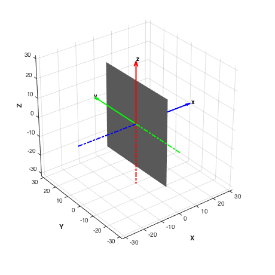

Demonstrate combined simulation for a sail in ST9 orbit.
This is a dawn-dusk sun-synchronous orbit that keeps the sail illuminated at all times. The sail is initialized along the LVLH frame. Shows the torque produced when sail is pointed along velocity vector. This can be avoided by aligning the sail along LVLH with a small loss in orbit change produced per orbit. You can also test sun-pointing and edge-on attitudes. The gravity model includes J2 for sun-synch orbit precession. The integration takes about 20 seconds/simulated day on a MacBook.
Since version 7. ------------------------------------------------------------------------- See also: FSailCombined SailEnvironment SailDisturbance SailEphemEarth FOrbitSingle ST9Guidance, QZero, AssignFHandle, Figui, InformDlg, Plot2D, Unit, Date2JD, El2RV, PltOrbit, SunV1, DisturbanceStruct, EnvironmentStruct, DrawSailAttitude, PlotSailForce, PlotSailProfile, DisplaySailProperties ------------------------------------------------------------------------
Contents
%--------------------------------------------------------------------------- % Copyright (c) 2007, 2010 Princeton Satellite Systems, Inc. % All rights reserved. %--------------------------------------------------------------------------- %%%%%%%%%%%%%%%%%%%%%%%%%%%%%%%%%%%%%%%%%%%%%%%%%%%%%%%%%%%%%%%%%%%%% %%%%%% USER PARAMETERS
Number of days to simulate
%---------------------------
nDays = 1;
Earth gravity parameters
%------------------------- nZonal = 2; % J2 nTesseral = 0; % Attitude profile method, see EarthGuidance % The available profiles are: % 1. Sun-pointing % 2. Constant force component along velocity vector % 3. Constant rotation with respect to LVLH frame % 4. Edge-on (no solar pressure force) % 5. Optimal angle for SMA increase %----------------------------------------- methodST9 = 1;
CAD model selection
%-------------------- cadModel = 'SailGEO_450.mat'; %%%%%%%%%%%%%%%%%%%%%%%%%%%%%%%%%%%%%%%%%%%%%%%%%%%%%%%%%%%%%%%%%%%%% %%%%%%%%%%%%%%%%%%%%%%%%%%%%%%%%%%%%%%%%%%%%%%%%%%%%%%%%%%%%%%%%%%%%%
Epoch
%------
jD = Date2JD([2010 3 15, 16 0 0]);
[uSun,rS] = SunV1( jD );
Constants
%---------- dE = load('EarthGravityModel.mat'); rE = dE.a; % radius of earth
Place sail in a sun-sychronous orbit
%------------------------------------- sma = 7978.1; meanm = sqrt( dE.mu/sma^3 ); J2 = 0.001082; dW = 360/(365*86400); % deg/s inc = acos( -dW*pi/180/ (3*meanm*J2*rE^2/(2*sma^2)) ); RA = atan2(uSun(1),uSun(2)); el0 = [sma;inc;RA;0;0;0]; % Plot initial orbit PltOrbit( el0, jD ); set(gcf,'name','Initial Sail Orbit'); [r,v] = El2RV( el0 ); q = QZero; w = [0;0;0];
Initialize simulation data structure
%------------------------------------- [d,p] = InitializeSailSim(jD,cadModel,'EarthGuidance'); d = InitializeSailGravity( d, 'earth', dE, nZonal, nTesseral ); % set guidance method d.method = methodST9; tEnd = nDays*86400; opts = odeset('abstol',1e-12,'reltol',1e-10); hDlg = InformDlg( 'Integrating...', 'ST9CombinedDemo' ); tic [z, x] = ode113( @FSailCombined, [0 tEnd], [r;v;q;w], opts, p, d ); toc close(hDlg); % Find out how many points were computed disp('Number of output points') disp(length(z))
-----------------------
Flat Sail GEO
Sail normal: [1 0 0]
Sail area: 2000 m2
Sail mass: 500 kg
Sail inertia (kg/m2):
16741.667 0 0
0 8408.3333 0
0 0 8408.3333
Sail characteristic accel: 0.036213 mm/s2
Number of bodies in model: 1
Number of components in model: 2
Sail class components: 1
Sail optical properties
Component Sail:
Specular Front: 1 Back: 1
Diffuse Front: 0 Back: 0
Absorptivity Front: 0 Back: 0
Emissivity Front: 0.3 Back: 0.3
Elapsed time is 6.943246 seconds.
Number of output points
1103
 Extract the profiles from the orbit
%------------------------------------ [p, env, f, tq] = FSailCombined( z', x', p, d ); PlotSailProfile( p, env, [1;0;0] ); PlotSailForce( f, p, env ) Plot2D(z',tq.total,'Sec',{'Tx','Ty','Tz'},'Torque (N)') DrawSailAttitude( d.g, p.q(:,end), [env.uSun(:,end) -Unit(p.r(:,end))] ); Figui %-------------------------------------- % PSS internal file version information %--------------------------------------
ans =
Figure (Plot2D) with properties:
Number: 7
Name: 'Sail Force Vector (mN) in Rotating Frame'
Color: [1 1 1]
Position: [440 378 560 420]
Units: 'pixels'
Use GET to show all properties
hQ =
Quiver with properties:
Color: [0 0.447 0.741]
LineStyle: '-'
LineWidth: 0.5
XData: 0
YData: 0
ZData: 0
UData: -10.388
VData: -26.774
WData: -56.349
Use GET to show all properties
ans =
Surface with properties:
EdgeColor: 'none'
LineStyle: '-'
FaceColor: [0 0 1]
FaceLighting: 'gouraud'
FaceAlpha: 1
XData: [25x25 double]
YData: [25x25 double]
ZData: [25x25 double]
CData: [25x25 double]
Use GET to show all properties